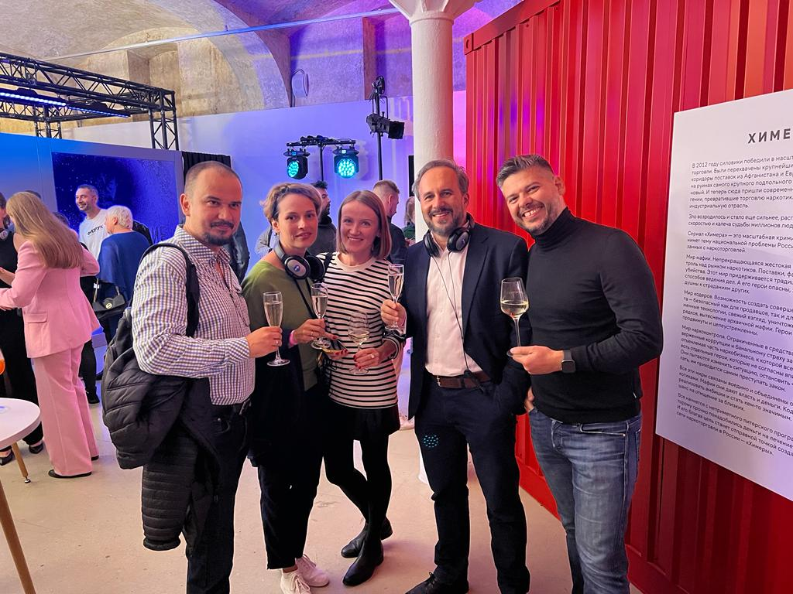
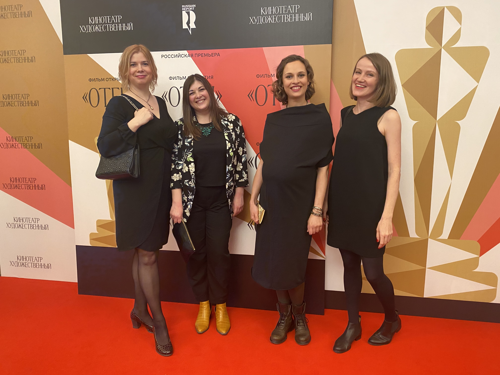
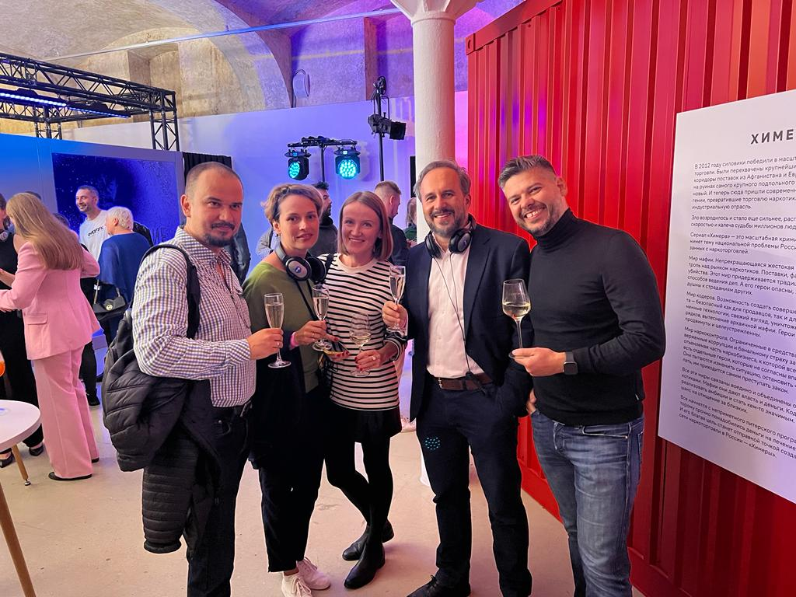
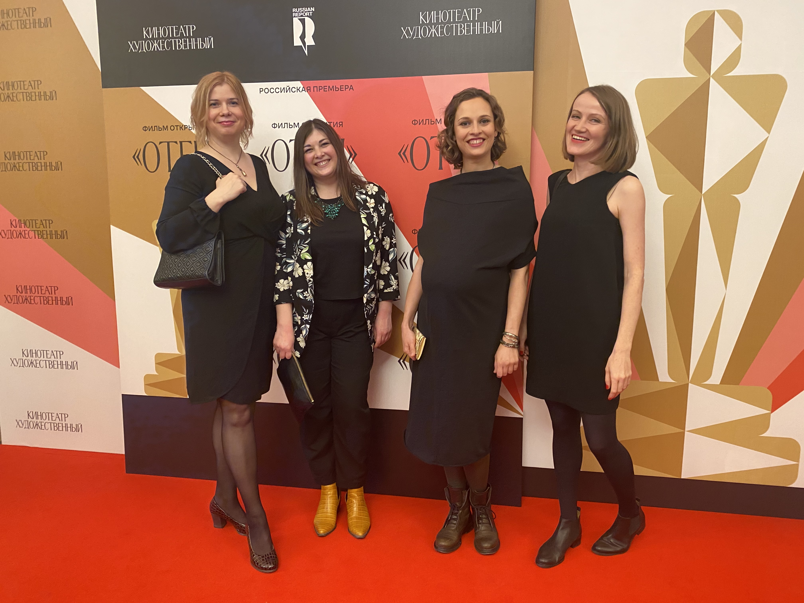
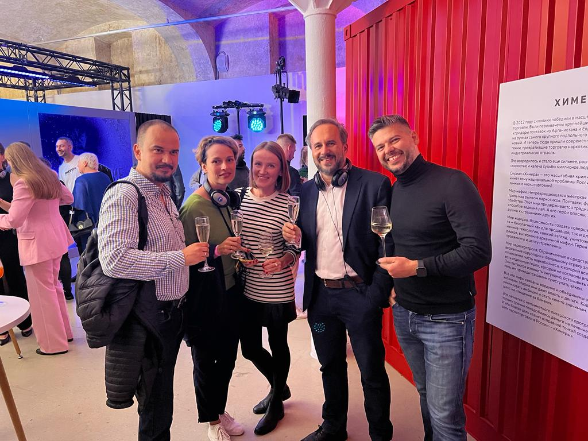
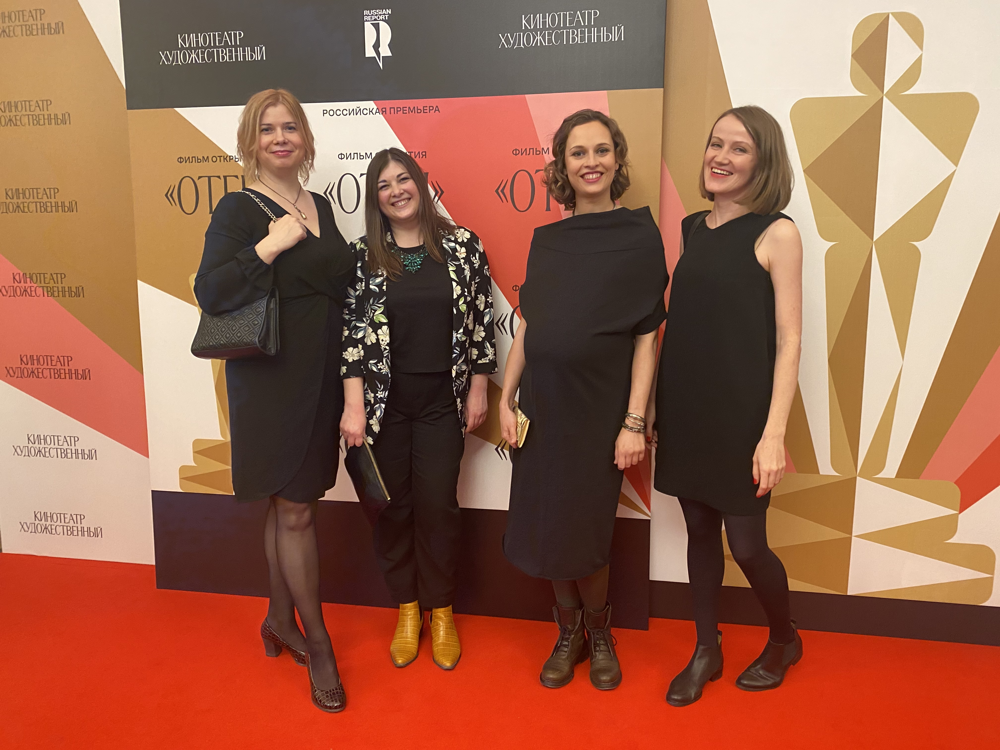

Мы держим руку на пульсе событий


Многолетний опыт
Уже тридцать лет «Русский Репортаж» является дистрибьютором теле-,
кино- и VOD продукции в странах СНГ и Балтии.
Все эти годы мы тесно сотрудничаем с ведущими мировыми компаниями,
такими как
Studio Ghibli,Goodfellas, Match Factory, Embarkment, Altitude,
20-th Century Fox, BBC, ITV, Fremantle, AETN, Works, Discovery,
StudioCanal и многими другими.
Обширный каталог
В нашем каталоге контент разнообразных жанров, детская и взрослая
анимация, сериалы, а также художественные фильмы всемирно признанных
режиссеров:
Клер Дени, Ксавье Долана, Роя Андерссона, Апитчатпонга
Вирасетакула, Горо Миядзаки, Хаяо Миядзаки, Дарио Ардженто, Кена
Лоуча.
ФЕСТИВАЛИ И ПРИЗЫ
Большинство наших картин – участники и победители международных
кинофестивалей:
Берлине, Каннах, Сан-Себастьяне, Торонто и др.
Среди них – обладатель двух премий «Оскар» драма «Отец»
(The Father)
с Энтони Хопкинсом и Оливией Колман в главных ролях, картина
«Событие»
(главный приз Венецианского кинофестиваля), мелодрама «История моей жены» с Леа Сейду и Луи Гаррелем в
главных ролях
(участник конкурсной программы Каннского кинофестиваля») .
Каталог документального кино уникален и разнообразен.
Лучшие примеры этого жанра – картины «Горы» и «Реки», завораживающие
величественной красотой и качеством съемки
(закадровый текст – Уиллем Дефо) .
Новости
Все новости
«ОТЕЦ» ПОЛУЧИЛ 6 НОМИНАЦИЙ НА «ОСКАР». ПРЕДСТАВЛЯЕМ ДУБЛИРОВАННЫЙ ТРЕЙЛЕР
17 марта 2023
«ОТЕЦ» ПОЛУЧИЛ 6 НОМИНАЦИЙ НА «ОСКАР». ПРЕДСТАВЛЯЕМ ДУБЛИРОВАННЫЙ ТРЕЙЛЕР
17 марта 2023
«ОТЕЦ» ПОЛУЧИЛ 6 НОМИНАЦИЙ НА «ОСКАР». ПРЕДСТАВЛЯЕМ ДУБЛИРОВАННЫЙ ТРЕЙЛЕР
17 марта 2023
«ОТЕЦ» ПОЛУЧИЛ 6 НОМИНАЦИЙ НА «ОСКАР». ПРЕДСТАВЛЯЕМ ДУБЛИРОВАННЫЙ ТРЕЙЛЕР
17 марта 2023